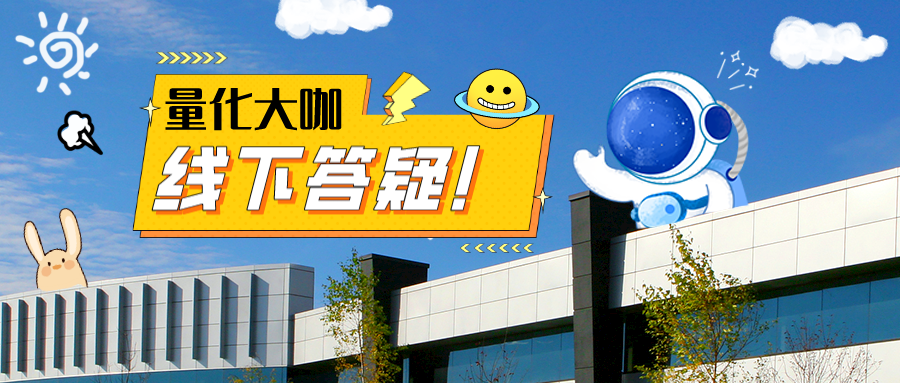

组织者：超级量化
时间：2023年5月21日 14:00~16:00
地点：北京市海淀区学清路东升科技园学院园
本次主题：量化入行、进阶，每个阶段如何做？
分享嘉宾：汪浩
清华大学电子工程系本硕
赫尔辛基理工大学计算工程专业博士
清华大学量化分析课程主讲老师
清华校友总会AI大数据专委会理事清华-青岛数据科学院特聘量化金融研究员
曾在多家量化私募担任量化投资及技术总监
中国计算机学会普适计算专委执委
汪浩博士拥有20余年大数据人工智能量化分析领域研究经验，数十项授权专利，在国际期刊及学术会议发表数十篇高水平论文，曾受邀给国内多家知名机构进行内部量化培训以及在峰会上发表主旨演讲
分享内容：
- 量化的热潮能持续多长时间呢？2. 量化行业的职业发展路径是什么？硕士和博士之间的发展差异大吗？
- 从事量化平台开发的程序员，相比于互联网大厂，薪资的平均水平和上下限分别有什么区别呢？
- 作为一个量化小白，该从什么方向开始一步一步学习，请问有推荐的路径与书籍吗？
- 如何开始学习量化投资以及获得第一份实习或全职机会？
- 作为非985院校的同学，要如何入门量化行业，如何找到实习？
- 作为一个传统工科的硕士二年级，如果想从事量化行业有哪些技术栈是需要自己准备的，转行难度大吗？
- 作为计算机专业学生，如何补充数学方面的技能树，需要掌握哪些方面的知识？
- 作为五财一贸的金融类本科学生，想进入量化行业有什么独特优势？如果选择出国最好读什么专业？
- 联网大厂工作，担心35岁裁员危机，想转行量化，应该选择哪些岗位？应该如何开展第一份工作？
- 量化研究，对于从业者要求是聪明天赋大于努力吗？假如对一个从业候选人做一个三因子模型，分别是聪明，勤奋和坚韧三个维度，它们三个权重是多少（和为1）？
- 量化与互联网AI的技术栈区别在哪里？从AI算法转到量化有什么方法和途径吗？
- 量化投资中的数据采集、清洗和处理技术重要吗？要如何做精做细？14. 市面上常见的风险管理与控制策略是什么样的？
- 其余问题现场针对性提问交流。
活动费用：30元（本次活动场地由茂源资本提供）
活动人数：本次活动为了保证交流质量，确保每个人都可以深入进行主题交流，采取报名筛选+邀请制，每次小聚的人数限定在10~15人
报名方式：关注【超级量化】公众号，扫码填写问卷，资格通过后，会有工作人员联系您